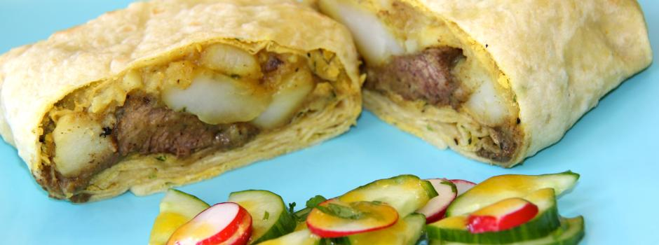
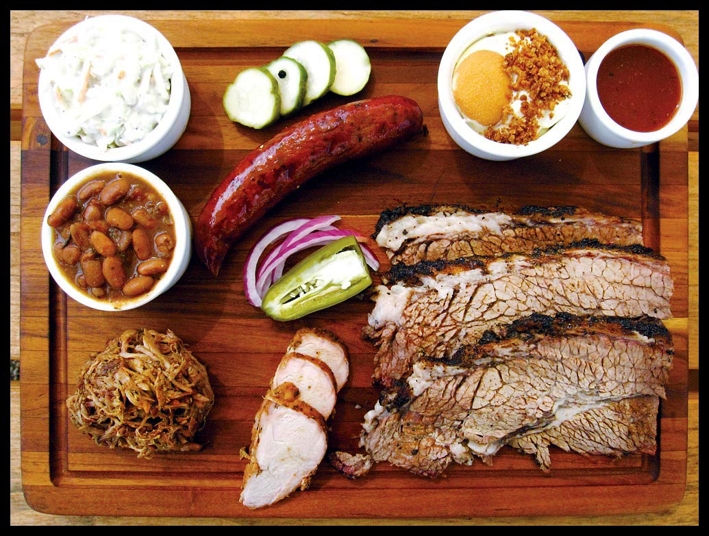
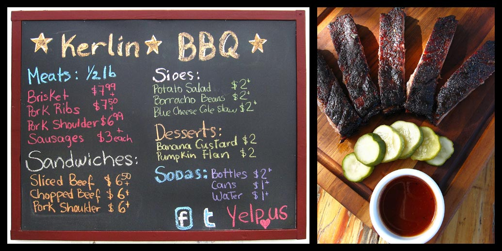

This is food from Trinidad and Tobago. It's kind of like a staple food. There really is not a set ingredients list usually the way it goes is by whatever is available at that time. Usually everything is cooked in one pot.  Roti is so good. I recommend trying roti from Trinidad and least once in your lifetime.
Who doesn't like Torchy's Taco's????
 So much goodness  Can't go wrong with Kerlin's off of Ceaser!!